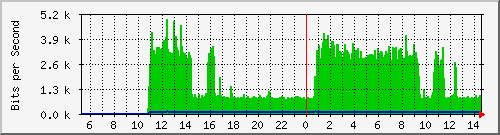
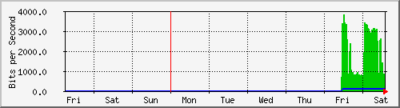
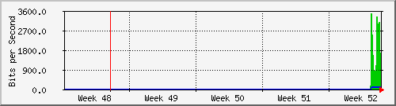
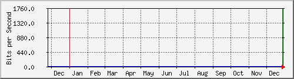

Traffic Analysis for 2 -- ap.csc.ku.ac.th
| System: | ap.csc.ku.ac.th in |
| Maintainer: | |
| Description: | FastEthernet0 |
| ifType: | ethernetCsmacd (6) |
| ifName: | Fa0 |
| Max Speed: | 100.0 Mbits/s |
| Ip: | No Ip (No DNS name) |
The statistics were last updated Saturday, 29 December 2012 at 14:35,
at which time 'ap.csc.ku.ac.th' had been up for 1 day, 5:03:24.
`Daily' Graph (5 Minute Average)

|
Max |
Average |
Current |
| In |
4936.0 b/s (0.0%) |
1984.0 b/s (0.0%) |
872.0 b/s (0.0%) |
| Out |
112.0 b/s (0.0%) |
104.0 b/s (0.0%) |
104.0 b/s (0.0%) |
`Weekly' Graph (30 Minute Average)

|
Max |
Average |
Current |
| In |
3832.0 b/s (0.0%) |
1992.0 b/s (0.0%) |
792.0 b/s (0.0%) |
| Out |
104.0 b/s (0.0%) |
104.0 b/s (0.0%) |
104.0 b/s (0.0%) |
`Monthly' Graph (2 Hour Average)

|
Max |
Average |
Current |
| In |
3488.0 b/s (0.0%) |
1928.0 b/s (0.0%) |
1432.0 b/s (0.0%) |
| Out |
104.0 b/s (0.0%) |
96.0 b/s (0.0%) |
104.0 b/s (0.0%) |
`Yearly' Graph (1 Day Average)

|
Max |
Average |
Current |
| In |
1728.0 b/s (0.0%) |
1728.0 b/s (0.0%) |
1728.0 b/s (0.0%) |
| Out |
80.0 b/s (0.0%) |
88.0 b/s (0.0%) |
88.0 b/s (0.0%) |
| GREEN ### |
Incoming Traffic in Bits per Second |
| BLUE ### |
Outgoing Traffic in Bits per Second |